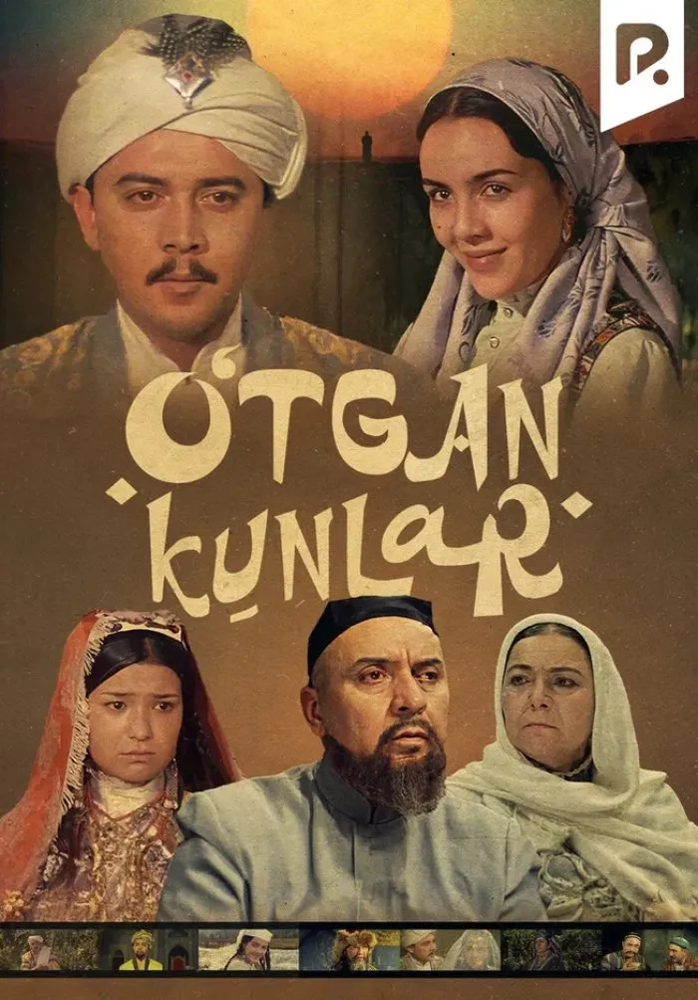

Sevimli Kitoblarim
1. "O'tkan Kunlar" - Abdulla Qodiriy
"O'tkan Kunlar" - Abdulla Qodiriy tomonidan yozilgan va o'zbek adabiyotining durdona asarlaridan biridir.

Qisqacha Tavsif:
Bu kitob XIX asrdagi O'zbekistonning ijtimoiy hayotini tasvirlaydi va undagi bosh qahramonlar Orifjon va Kumushxonning sevgi hikoyasini hikoya qiladi.
Kitoblar haqida video:
### Sevimli Kitoblarimning Ro'yxati:
- "O'tkan Kunlar" - Abdulla Qodiriy
- "Alkimyogar" - Paulo Coelho
- "Shum Bola" - G'afur G'ulom
Najot talim